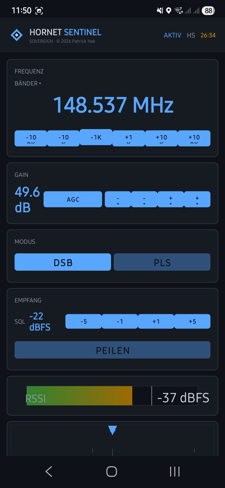

Simulationsmodus — DOA-Linien, oranges Fehlerpolygon (Einzelbild), grünes Prognosepolygon (kumuliert)
Sovereign RF Direction Finding & Triangulation
RF C2-System zur Echtzeit-Ortung von Signalquellen mit KrakenSDR-Hardware.
Betrieb auf eigener Infrastruktur — oder als gehostetes Portal. Vollständig autark.
Simulationsmodus — DOA-Linien, oranges Fehlerpolygon (Einzelbild), grünes Prognosepolygon (kumuliert)
Einbindung offizieller Schweizer Kartendienste (Swisstopo, SwissImage, Orthofoto) für präzise räumliche Orientierung — ergänzt durch Dark- und Light-Basiskarten.
Vollständiger Dark- und Light-Modus für optimale Ablesbarkeit bei unterschiedlichen Lichtverhältnissen im Feld.
Vollständige Unterstützung in Deutsch, Englisch und Französisch (DE / EN / FR). Sprachpräferenz wird lokal gespeichert.
Zentrale Steuerung und Überwachung entfernter Messeinheiten inklusive Betriebszustand, Live-Peildaten und Hardware-Telemetrie.
Implementierung verschiedener mathematischer Verfahren zur genauen Richtungsbestimmung (u.a. MUSIC, Bartlett, Capon). Triangulation aus mehreren Stationen mit Konfidenz-gewichtetem Schätzwert.
Gleichzeitige Erfassung mehrerer Frequenzen zur Beobachtung komplexer Signalsituationen. Farbcodierung pro Frequenzquelle für schnelle visuelle Zuordnung.
Werkzeuge zum Abgleich von Messpunkten über einen bekannten Referenzsender. Korrekturen werden rückwirkend auf alle historischen Daten angewendet.
Live-Visualisierung von Signalstärken, Pegel und Qualitätskennwerten zur Identifikation und Bewertung der erfassten Sender.
Integriertes Modul zur Vorhersage der Funkreichweite, Simulation von Umgebungsverlusten und Optimierung der Stationsplatzierung im Gelände — ohne Datenbankschreibzugriff.
Auswertung vergangener Zeiträume zur Rekonstruktion von Signalbewegungen und Trends. Flexible Zeitfensterauswahl (1/5/15/30 Min. oder benutzerdefinierter Bereich).
Visualisierung von Aufenthaltsbereichen durch die Kombination mehrerer Peilvektoren. Heatmap zeigt Signalquell-Schwerpunkte auch bei verrauschten Einzelmessungen.
Unterstützung für verschlüsselte Verbindungen (HTTPS/TLS) und geschützte Netzwerk-Overlays. Rollenbasiertes Zugriffsmanagement (Admin / Operator / Viewer).
Schnelle Fern-Installation und Aktualisierung der Sensor-Software auf den Zielgeräten — direkt aus dem Portal per SSH, ohne manuellen Zugriff vor Ort.
Optimierte Ansicht für den taktischen Zugriff über Smartphones und Tablets direkt vor Ort. Responsive Toolbar, Off-Canvas-Panel, vollbildfähiges Konfigurationsmenü.
Verstecktes Planungswerkzeug — keine Datenbankschreibzugriffe, rein frontend-seitig. Aktivierung: dreifacher Klick auf das Logo (Desktop) oder ⬡-Schaltfläche (mobil).
| TX Power | dBm | Max. range (detect −110 dBm) | DOA-quality (−100 dBm) |
|---|---|---|---|
| 0.1 nW | −70 dBm | ~9 m | no |
| 1 nW | −60 dBm | ~50 m | no |
| 10 nW | −50 dBm | ~90 m | no |
| 100 nW | −40 dBm | ~160 m | marginal |
| 1 µW | −30 dBm | ~280 m | yes (~90 m) |
| 10 µW | −20 dBm | ~500 m | yes (~160 m) |
| 100 µW | −10 dBm | ~900 m | yes (~280 m) |
| 1 mW | 0 dBm | ~2.5 km | yes (~800 m) |
| 10 mW | +10 dBm | ~4.5 km | yes (~1.5 km) |
| 100 mW | +20 dBm | ~8 km | yes (~2.5 km) |
Environment loss (suburban +20 dB, urban/forest +30 dB) divides range by ~10–30×. Full table: docs/link-budget-148mhz.md in the rfmap repo.
Plan transmitter movement before a field deployment — especially useful with only 2 stations to find paths with acceptable GDOP throughout.
GDOP (Geometric Dilution of Precision): lower value = better geometry. Score 100% = ideal angular spread between stations.
Vollständige Referenz aller Steuerelemente, Ebenen, Modi und Interaktionen.
| Layer | What it shows |
|---|---|
| DOA Lines | Direction-of-arrival rays from each station. Dashed, colour-coded per station. Length auto-scales 30% past the farthest intersection. |
| Intersections | Crossing points of DOA line pairs — each is a position estimate. Confidence-weighted centroid + orange error polygon shown when ≥ 3 crossings. |
| Heatmap | Kernel-density map of intersection points. Reveals dwell areas even when individual crossings are noisy. |
| Trail | Faint historical DOA lines for the current time window — shows how bearings evolved. |
| Distances | Labelled lines between all station pairs (m / km). Useful for tactical spacing and baseline planning. |
| Control | Values / Range | Effect |
|---|---|---|
| Max Distance | 10 – 1,000,000 m | Maximum DOA line length drawn on map. |
| Mode | Live / History | Live: auto-refresh every 4 s. History: manual date/time range query. |
| Time Window (Live) | 10 s – 120 min | How far back live data is fetched. |
| Frequency Filter | All / 148.537 / 446.094 / Custom | Show only reports on the selected frequency. |
| Map Style | Dark · Light · Ortho · Swisstopo · SwissImage | Background tile layer. All cached locally for offline use. |
| Language | DE / EN / FR | UI language. Applied immediately via i18n attribute system. |
| ⚙ Alle Stationen | — | Open global config modal — pushes settings to all stations at once. |
| ⊕ Kalibrieren | — | Enter calibration mode (see Calibration section). |
| ✥ Verschieben | — | Make station markers draggable to correct GPS position. |
| ⬡ (mobile) | — | Toggle simulation mode — alternative to triple-click logo. |
Activate: triple-click the logo (desktop) or tap ⬡ (mobile). No database writes — purely frontend.
| Control | Range / Values | Effect |
|---|---|---|
| TX Power | 0.1 nW – 50 W (nW / µW / mW / W) | Transmitter output. 0 = unknown — no range circle, stations always visible. |
| Environment Loss | Freifeld 0 dB · Offenes Gelände +10 dB · Suburban +20 dB · Urban/Wald +30 dB · Dicht bebaut +40 dB | Extra propagation loss added to FSPL. Stations beyond resulting range drop out. |
| Noise | 0 – 30° | Angular DOA error per measurement. 5–10° = realistic field. 15–25° = heavy multipath. |
| Trails | 0 – 12 | Extra simulated rounds drawn as faint trail lines behind main DOA rays. |
| Animate | 200 – 2000 ms / frame | Continuous re-render with fresh random noise. Predict polygon accumulates over frames. |
| +Pkt | — | Add current target marker position as next route waypoint. |
| ↩ | — | Remove last waypoint. |
| Speed | 1 – 500 km/h | Target speed along route during animation. |
| ✕ (route) | — | Clear entire route. |
| Optimierung | checkbox | Show GDOP quality badge + optimal station position suggestions + range circle. |
| ✕ Beenden | — | Exit simulation mode, return to live view. |
| Simulation Visual | Description |
|---|---|
| Orange error polygon | Uncertainty area for the current frame — shrinks with better geometry / lower noise. |
| Green predict polygon | Accumulated centroid history (8–25 frames rolling window). Fades in after 8 frames, persists after animation stops. |
| GDOP badge | Gut ≥ 75% · Mittel ≥ 45% · Schlecht < 45%. Updated every frame during animation. |
| Orange range circle | Maximum detection radius based on TX power + FSPL + environment loss. |
| Cyan dashed circle | Optimal station deployment radius for best GDOP. |
| Ghost markers (OPT 1…N) | Suggested optimal station positions for the current target location. |
| Route line | White dashed polyline through all waypoints with ∑ distance label. |
| Heatmap (sim) | Built once when animation starts — shows intersection density at target position. |
| Action | How | Effect |
|---|---|---|
| Add station | + button in station list | Register a new station by ID (and optional display name). |
| Delete station | ✕ on station card | Remove station and all its data permanently. |
| Start / Stop DOA | ▶ / ■ on station card | Send start/stop command to the KrakenSDR service on the station Pi. |
| Status | ⟳ on station card | Poll current DOA service status. |
| Reboot / Power off | Buttons on station card | Remote reboot or shutdown of station hardware. |
| Enable / Disable | ● / ○ toggle on station card | Exclude station from live DOA, triangulation and simulation without deleting it. |
| Position override | ✥ Verschieben → drag marker | Manually correct station GPS coordinates. Map updates immediately. 📍✕ button clears the override. |
| Click station name | Panel → station list | Center map on that station's position. |
| Parameter | Range / Options | Description |
|---|---|---|
| RECEIVER | ||
| Frequency | 1 – 6000 MHz | Centre frequency for KrakenSDR. Entered in MHz (e.g. 148.537). |
| Gain | 0 – 49.6 dB (29 steps) | RF front-end gain. Default 43.9 dB for 200 µW wildlife telemetry tags. |
| Sample Rate | 1.024 / 1.536 / 2.048 / 2.4 / 2.88 / 3.2 MHz | ADC sample rate — determines usable bandwidth. |
| DOA | ||
| Method | MUSIC · Bartlett · Capon · MEM · ROOT-MUSIC | DOA algorithm. MUSIC default — best resolution. |
| Array Type | UCA · ULA | Circular or linear antenna arrangement. |
| Antenna Spacing | 0.1 – 2.0 λ | Element spacing in wavelengths. |
| Elements | 2 – 8 | Number of antenna elements. |
| Expected Sources | 1 – 10 | Expected number of simultaneous RF sources. |
| Azimuth Correction | –180° – +180° | Manual bearing offset to correct array orientation. |
| FILTER & TIMING | ||
| Squelch | –120 – 0 dBm | Minimum signal level to report a bearing. |
| VFO Bandwidth | 1 kHz – 2.4 MHz | Width of the virtual receiver window around centre frequency. |
| Update Interval | 100 – 10,000 ms | How often the station sends new bearing data. |
| Burst Mode | on / off | Only transmit when signal detected — saves bandwidth for pulsed transmitters (e.g. 20 ms VHF telemetry tags). Default on. |
| TEMPLATE | ||
| ⭐ Als Standard | — | Save current config as default template for new stations (excluding station IP). New stations auto-load this template when their config modal is first opened. |
| NETWORK / SSH | ||
| Position Override | lat / lon | Manual GPS coordinates if station has no GPS fix. |
| ZeroTier / VPN IP | 172.x.x.x | Station network address for API and SSH access. |
| API Key | string | Authentication token for inbound bearing reports. |
| SSH User / Password | string | Credentials for script deployment via SSH. |
| DOA Service Name | default: krakensdr_doa | systemd service name controlled by start/stop commands. |
Built into the station config modal. Visualises the sampling band and detects known interferers.
| Interferer | Frequency Range |
|---|---|
| CH Pager (Swisscom) | 147.3 – 147.7 MHz |
| TETRA / BOS | 380 – 400 MHz |
| FM Broadcast | 87.5 – 108 MHz |
| PMR446 | 446.0 – 446.2 MHz |
⚡ Auto-fix: selects the smallest compatible sample rate that keeps all detected interferers outside the sampling band. For CH 148.537 MHz → sample rate ≤ 1.024 MHz excludes CH pager band.
Correction is a bearing offset (°) applied at query time — no reprocessing of raw data needed. Per-station, survives restarts.
| Interaction | Effect |
|---|---|
| Triple-click logo | Toggle simulation mode |
| Click intersection marker | Center map on that intersection |
| Click station name (panel) | Center map on that station |
| Click DOA line | Show bearing report popup (station, bearing, confidence, timestamp) |
| Click intersection point | Show popup with lat/lon and contributing station pair |
| Drag station marker | (Move mode active) Override station GPS position |
| Drag sim target marker | Reposition simulated transmitter, clears predict polygon |
| ☰ (mobile) | Open/close side panel |
| Station slot | Colour |
|---|---|
| 1 | #58a6ff — Blue |
| 2 | #f78166 — Red-orange |
| 3 | #3fb950 — Green |
| 4 | #d2a8ff — Purple |
| 5 | #ffa657 — Orange-gold |
| Constant | Value | Description |
|---|---|---|
| Live refresh | 4 s | Auto-refresh interval in live mode |
| Station timeout | 120 s | Station shown as offline after no report for 2 min |
| Accum min | 8 frames | Frames before predict polygon appears |
| Accum window | 25 frames | Rolling centroid history for predict polygon |
| RX threshold (detect) | −110 dBm | Minimum received power to register a bearing |
| RX threshold (DOA quality) | −100 dBm | Minimum for SNR ≥ 10 dB (reliable DOA) |
Hornet Sentinel folgt einer dezentralen Edge-Computing-Philosophie — die Signalverarbeitung findet auf dem Sensor statt, nur kompakte Peilungsvektoren erreichen das Portal. Der Kanal ist bidirektional: Konfigurationsänderungen und Steuerbefehle werden vom Portal zurück an den Edge-Node gepusht. Das Backend läuft On-Premise oder als gehosteter Dienst — gleiche Codebasis, freie Wahl.
| Szenario | ws_mode | Netzwerk | Uplink | Downlink | Verschlüsselung |
|---|---|---|---|---|---|
| ✅ VPN + WebSocket | zt |
ZeroTier VPN | WSS :2096 | Config-Push WS — sofort | 🔒🔒 VPN-Tunnel und TLS |
| ✅ Internet + WebSocket | internet |
Öffentliches Internet | WSS :2096 | Config-Push WS — sofort | 🔒 TLS (Nginx terminiert) |
| ⚠ VPN + HTTP | off (Standard) |
ZeroTier VPN | HTTP :8080 /save.php | SSH/SFTP + Neustart | 🔒 VPN-Tunnel — kein TLS KrakenSDR-Firmware akzeptiert kein self-signed Cert |
| ❌ Internet + HTTP | off |
Öffentliches Internet | HTTP :8080 | SSH/SFTP | ❌ unverschlüsselt — nicht empfohlen |
| Scenario | Infrastructure | Advantages |
|---|---|---|
| On-Premise | Local server or VM — your hardware, your network | Full data sovereignty · No external dependency · Works air-gapped · No subscription |
| Cloud-Hosted | Any Linux VPS with Docker | No hardware to maintain · Accessible from anywhere · Instant setup · Scales with demand |
| Tactical / Mobile | KrakenSDR + RPi, local hotspot only | Fully offline · Single operator · Direct field use |
The portal is currently available as a hosted service — self-hosting via Docker Compose is supported with the same feature set.
The system is VPN-agnostic — ZeroTier is used in the reference setup but any overlay network (WireGuard, OpenVPN, IPsec) works equally well.
Rate limiting: POST /api/auth/login is limited to 10 attempts per IP per 15 minutes. Exceeding the limit returns HTTP 429.
| Method | Path | Auth | Description |
|---|---|---|---|
| POST | /save.php | ?api_key= | KrakenSDR report (form-encoded, RDF Mapper compatible) |
| POST | /api/report | X-Api-Key | KrakenSDR report (JSON) |
| GET | /api/live | — | Recent DOA reports + computed intersections |
| GET | /api/history | — | Historical DOA reports by time range |
| GET | /api/heatmap | — | Intersection heatmap points |
| GET | /api/stations | — | Station list with last position |
| POST | /api/stations | X-Api-Key | Register new station |
| GET | /api/station/:id/config | — | Station config (polled by Pi) |
| PUT | /api/station/:id/config | X-Api-Key | Save station config |
| PUT | /api/stations/config | X-Api-Key | Push config to all stations |
| POST | /api/station/:id/deploy | X-Api-Key | SSH-deploy config sync script |
| POST | /api/station/:id/control | X-Api-Key | Start / stop / status / restart DOA process |
| POST | /api/stations/restart-all | X-Api-Key | Restart all stations in parallel via SSH |
| DELETE | /api/station/:id | X-Api-Key | Delete station + all data |
| PATCH | /api/station/:id/enabled | X-Api-Key / Session | Enable or disable a station |
| POST | /api/station/:id/health | X-Api-Key | Report per-channel antenna health (CH0–CH4) |
| POST | /api/auth/login | — | Login (username + password → session cookie) |
| POST | /api/auth/logout | Session | Invalidate session |
| GET | /api/auth/me | Session | Current user info (id, username, role) |
| GET | /api/admin/users | admin | List all users |
| POST | /api/admin/users | admin | Create user (username, password, role) |
| DELETE | /api/admin/users/:id | admin | Delete user |
Zwei geometrische Effekte: Schnittwinkel (GDOP) — nahezu parallele Linien erzeugen einen riesigen, instabilen Schnittpunkt. Und Distanz — gleicher Winkelfehler bei 5 km = 5× grösserer Positionsfehler als bei 1 km. Optimal: Stationen umgeben das Ziel mit ~60–90° Schnittwinkeln.
Das FSPL-Modell berechnet die empfangene Leistung. Sinkt sie unter −110 dBm (KrakenSDR-Empfindlichkeit), «hört» die Station nichts. TX-Leistung erhöhen, Umgebungsverlust reduzieren oder Station näher ans Ziel setzen.
TX = 0 bedeutet «unbekannt». Der GDOP-Optimierer läuft ohne Reichweitenbeschränkung (kein oranger Reichweitenkreis). Die Simulation selbst verwendet intern 1000 mW, damit Stationen sichtbar bleiben.
Er prüft, ob bekannte Störer (CH Pager 147.3–147.7 MHz, TETRA, BOS, FM) ins Abtastband fallen. Dann empfiehlt er die kleinste KrakenSDR-kompatible Abtastrate, die alle erkannten Störer ausschliesst. Für CH 148.537 MHz: Abtastrate ≤ 1.024 MHz hält CH-Pager ausserhalb des Bandes.
Ja. Alle Kartenkacheln werden lokal zwischengespeichert (/app/tile-cache/). Das System ist für den Betrieb ohne Internetverbindung ausgelegt.
Minimum 2 (1 Schnittpunkt). Optimal 3 (3 Schnittpunkte, Fehlerdreieck sichtbar). Ideal 4+ (6+ Schnittpunkte, robust auch bei Ausfall einer Station).
Einen Testsender an bekannter Position aufstellen, den Kalibrierungsmarker dorthin ziehen und «Korrekturen übernehmen» klicken. Die Korrektur wird serverseitig zur Abfragezeit angewendet — behebt rückwirkend alle historischen Daten ohne Neuverarbeitung.
Mit nur 2 Stationen erhält man einen einzigen Peilungsschnittpunkt. Der Schnittwinkel variiert stark je nach Zielposition relativ zur Basislinie. Mit der Routen-Simulation Senderpfade abgehen und das GDOP-Qualitätsabzeichen live beobachten — Grün = gute Geometrie, Rot = tote Zone. Den Pfad wählen, der das Abzeichen am längsten grün hält.
Diese Standardwerte sind für VHF-Telemetrie-Tags (Hornissen, Vögel, Kleinsäuger) vorkonfiguriert:
| Parameter | Value | Reason |
|---|---|---|
| Frequency | 148.537 MHz | Standard CH wildlife telemetry band |
| Gain | 43.9 dB | 200 µW = −37 dBm — maximum gain needed |
| Squelch | −70 dBm | Trigger on pulse, reject noise floor |
| VFO Bandwidth | 6250 Hz | Narrow channel — better SNR |
| Burst Mode | on | Process only during 20 ms pulse, not silence |
| Update Interval | 500 ms | Pulse rate ~60 BPM = 1 pulse/s, 500 ms margin |
| Sample Rate | 1.024 MHz | Excludes CH Pager band (147.3–147.5 MHz) |
Mit 3 Stationen: Ortungsgenauigkeit < 15 m im offenen Gelände.
admin — Vollzugriff inklusive Benutzerverwaltung unter /admin.
operator — alle Stationssteuerungen (Konfiguration, Deploy, Start/Stop, Aktivierung). Keine Benutzerverwaltung.
viewer — Nur-Lese-Zugriff auf das Portal. Alle Schreibvorgänge serverseitig blockiert.
Standardanmeldedaten beim ersten Start: admin / admin — sofort über /admin ändern.
Proprietäre Android-Applikation als mobiler Sensor-Knoten — ergänzt die stationären KrakenSDR-Einheiten im Nahbereich («die letzte Meile») und ermöglicht eine dynamische, kooperative Suche direkt im Gelände.

Über USB-OTG steuert die App ein kompaktes SDR-Frontend an. Der HF-Datenstrom der Ziel-Telemetrie wird in Echtzeit verarbeitet und die aktuelle Signalstärke (RSSI) berechnet.
Funkparameter werden synchron mit internen Smartphone-Sensoren verknüpft: GNSS (GPS) für hochpräzise Standortbestimmung des Operators und IMU (Magnetometer + Gyro) für den exakten Heading der Richtantenne.
Aggregierte Datensätze (Position, Richtung, Signalstärke) werden verschlüsselt via REST-Webservice an das Analyse-Portal übermittelt und in die Echtzeit-Lagedarstellung integriert.
Intuitive Visualisierung der Signalstärke grafisch und akustisch (RSSI-Ton mit variabler Tonhöhe). Unterstützt den Anwender bei der manuellen Richtungsbestimmung im Gelände — auch ohne Blick aufs Display.
Im zentralen Portal werden die Vektoren der mobilen Einheiten mit den stationären KrakenSDR-Nodes fusioniert. Ergebnis: eine Echtzeit-Lagedarstellung, die den Suchradius für Einsatzkräfte massiv eingrenzt.
Die App ist proprietäres Eigentum von Patrick Hak / hak-digital.ch. Der Quellcode ist privat. Eine Vervielfältigung, Dekompilierung oder Nutzung ohne ausdrückliche schriftliche Genehmigung ist untersagt.
| Komponente | Details |
|---|---|
| Hardware-Interface | USB-OTG → RTL-SDR (RTL2832U + R820T) |
| IQ-Verarbeitung | 1.024 MHz Abtastrate → 128× Decimation → 8 kHz Audio |
| Demodulation | DSB (Hüllkurve) / CW (BFO 700 Hz + IIR-Bandpass) |
| Squelch | Audio-RSSI, ±1 / ±5 dBFS Schritte, Auto-Set |
| RSSI-Ton | 300–1200 Hz proportional zu Signalstärke (hands-free DF) |
| Positionierung | GNSS (GPS) + IMU Sensor-Fusion |
| Datenübertragung | REST-API → Portal (HTTPS) |
| Copyright | © 2026 Patrick Hak / hak-digital.ch — All rights reserved |